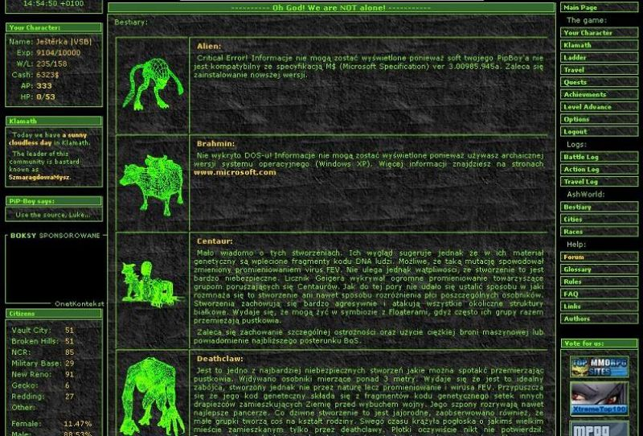
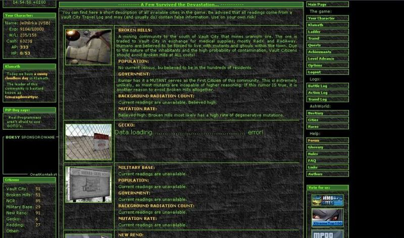
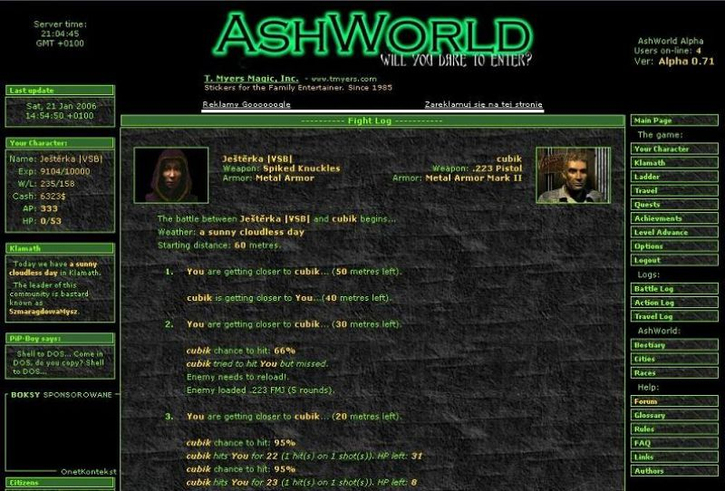
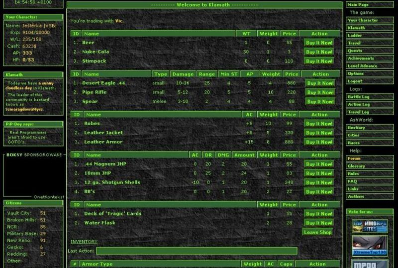

Tak takhle nějak vypadal můj první letmý kontakt s AshWorldem, ambiciózním Polským projektem, který se stále chlubí podtitulkem “betaverze”. Což vzhledem k tomu, že probíhá už třetí nebo čtvrtý věk, pro vás zřejmě nebude až tak věrohodné tvrzení, ale opak je pravodou – AW se vyvíjí tak nějak “za chodu”, často podle toho, jaké změny a vybavení by se zrovna šikly nám hráčům, především pak domácím želízkům na špici žebříčku. :-) Rádi bychom vás upozornili také na to, že tento článek je psán trochu jiným způsobem, než na jaký jste byli dosud zvyklí.

Pokud jsem vás v novinkách hláškami typu „krutý třetí věk v AshWorldu je za dveřmi!“ pravidelně vytáčel, vězte, že jsem k tomu měl pořádný důvod. A jaký teda ten AshWorld je? Je zábavný a poměrně návykový (obzláště zpočátku nebo pokud vyhráváte) a pohybují se v něm i jedinci, kteří si na hře vyprodukovali menší závislost. Vytvoříte si svého pouštního bijce, posečkáte na pár akčních bodů (dále jen „AP“, přibývá jeden za hodinu) a jdete mlátit po hlavě první protivníky, popř. nějakou tu zvířecí chamraď. Sice se můžete i různě pohybovat mezi městy známými ze druhého Falloutu a dohmátnout se k hrstce questů a ti nejpilnější i k automobilu, ale jednak to stojí drahocenné AP, což ve webovce skoro až slepě zaměřené na boj není zrovna ideální řešení, a zadruhé není zatím tato činnosti prakticky ničím motivována. Čili necháme děj dějem a raději se přesuneme tam, kde je AshWorld silný.
Samotný boj potom probíhá klasicky na tahy a bohužel ho (alespoň prozatím) neovlivníte, ale můžete se na něj připravit tak, že si ve městech (opět u postav vesměs známých ze hry) nakoupíte vybavení, které si zrovna váš typ postavy žádá. Barter mezi dvěma živáčky je zatím především kvůli vzniku prvních klanů a společností neaplikovatelný. Váš hrdina má klasický inventář s možností napěchovat ho věcmi, které určitě poznáte, a dva sloty na zbraň / armor. Systém levelování je zase stejný jako ve slavné sáze, s tím rozdílem, že Poláci ještě nerozchodili složitý systém perků, který by v časech budoucích mohl celou hrou pořádně zamávat.

Pokud se do do světa rozhodnete prostřednictvím AshWorldu opět ponořit do světa po jaderných bombách, musíte počítat s tím, že hra je zaměřená z 95% na potyčkách a nic nenasvědčuje tomu, že by se mělo v nejbližší době něco měnit. Taktéž je třeba počítat s tím, že než začnete vykosťovat i ty největší tvrďáky s H&K brokovnicemi a gatlingy, bude potřeba obětovat pár dní bádání a zkoušení metodou pokus/omyl. Rodného jazyka tvůrců se obávat nemusíte, do tradiční angličtiny vám již na webu skočí jen zřídka. Jak jsem napsal, už od vzniku si s sebou AshWorld vleče i pár chronických chybek, přesto je to velice zajímavá možnost jak zabít mnoho lednových odpolední sledováním statistik a tabulek i na relativně pomalé lince, a možnost sledovat jak hra, kterou máte rádi roste doslova přímo před očima. Nevím, jestli je produkt v současném stavu lepší nebo horší než konkurenční webovky, neboť se jima nijak hluboce nezabývám, ale zabavit dokáže bez problému a to je to, co se počítá. A hlavně – JE TO FALLOUT!

Ještě se sluší přidat pár odkazů, kde není na škodu to omrknout, případně si rozšířit obzory a doplnit znalosti: Polská homepage a její fórum, kde i vy jako hráč máte možnost ukecávat reformy a nové změny, Vault Šílené Brahmíny, kde se začal formovat první český klan [VSB], zaměřující se především na eliminaci Poláků :-), a Fallout web by HHPZ, který se jako jediný český web AshWorldem zaobírá tak nějak blíže.
Svými kořeny sahá až do poloviny 90. let, kdy vyšel z jiných RPG pravidel (GURPS) a jeho název značí sedm základních vlastností vaší postavičky – Strenght, Perception, Endurance, Charisma, Intelligence, Agility a Luck. Poprvé se objevil (možná by bylo výštižnější říct “zabodoval”) právě ve Falloutech, kde se spolu s vaulty, atmosférou 50. let v USA lízlou blízkou katastrofickou budoucností a komixovým panáčkem s blonďatými kadeřemi pomohl namixovat kultovní a takřka dokonalý celek. Později na něm byly (po pár nutných úpravách) zcela logicky postaveny i další áčková RPG od Black Isle / Interplay, jako třeba epické Baldur´s Gate nebo úžasně morbidní Planescape: Torment. Doufejme, že hrám postaveným na SPECIALu ještě definitivně neodzvonilo.

Tajemný osud budoucnosti lidstva je zpečetěn; jen ti nejsilnější dokáží přežít v postapokalyptickém světě plném nástrah a nebezpečí. Dokážete to i vy? Zkuste to v AshWorldu a uvidíte sami…
Aby příznivci kultovní hry Fallout nemuseli tak znuděně čekat na další pokračování této série, vrhli se polští fanoušci do internetového zpracování s námětem právě této hry. Pře necelým rokem Vás tento server již několika málo články o podrobnostech této webovky informoval, čas však pokročil a tak si tato vyvíjející se návyková hra zaslouží další upozornění. Nyní se vším všudy.
Osobně jsem fenoménu známém pod jménem AshWorld podlehl krátce poté, co se již jeden z nejúspěšnějších českých hráčů, JaW, začal od časožroutové závislosti na AW distancovat. Společně s tím však zanikl i proud informací o této webovce a to v době, kdy hra začala neuvěřitelně expandovat. Skoro již rok jsem však i já její součástí a tak si Vás dovoluji obeznámit a informovat o nových upgradech a změnách… Vždyť každý nový turnaj (nový věk) přináší něco nového. Začněme ale od začátku: Jak tedy AshWorld ve skutečnosti vypadá? Pojďme na to společně!
Vše podstatné začíná na této stránce. Po spuštění vás přivítá zelenočerné prostředí, tak typické pro Fallout. Abychom vůbec mohli začít hrát, je důležité vytvořit si postavu. Její tvorba je téměř totožná jako již ve zmiňovaném Falloutu, na výběr však máme ze tří ras: člověk, ghoul a mutant. Každá entita má samozřejmě své plusy i minusy, ale jen zkušený plejer jej dokáže vyšperkovat tak, aby způsoboval zkázu všem protihráčům. Všeobecně ale zatím platí, že ghoul je nejslabší, kdežto mutanti a lidé se na vrcholu žebříčku střídají. Zajímavé lákadlo do budoucna je možná to, že autoři snad opět zprovozní a zpřístupní párače.
S popisem hry jste se již mohli setkat v našich starších článcích (tady a tady). Je toho však stále více a více, čím by vás hra mohla zaujmout. Neustálé vylepšování, jež se většinou řídí i žádostmi samotných hráčů, neustále zvyšuje hladinu očekávání na další nové turnaje, neboť s nimi přichází nové a nové možnosti: v neposlední řadě to jsou nová města s novými čtvrťmi, nové obchody s často obměňovaným arzenálem nových a stále silnějších a zajímavějších zbraní či nejodolnějších brnění, ale i nové questy, za jejichž vyřešení můžete získat nějaký ten peníz či jinou odměnu.
Starší, zato stále aktuální téma je vlastnictví AUTA: ano, pokud jste ochotni obětovat několik, pro mnohé i desítek, AP, dopracujete se až k získání deseti součástek, za které si pak můžete nechat složit auto. A výhoda? Cestování po mapě zcela bez ztráty jediného AP. Radno dodat, že elita hráčů v první dvacítce prostě bez auta existovat nemůže.
Zajímavou a stále rozmáhající se součástí našeho života v AW je i tvorba GANGŮ. Již „legendární“ a klasický je souboj polského gangu MFP a českého VSB, převážně fanoušků stránek Vaultu Šílené Brahmíny. Gangy nejsou ve hře již ničím neobvyklým: seskupení hráčů nejenže podle statistik výher/proher mezi jednotlivými gangy dostává od města (zatím jen jednoho- Den) výpalné, ale může si se mezi sebou vyměňovat součástky do aut, rozdělovat peníze či je naopak vybírat, aby měl postupně každý člen tu nejlepší výbavu, a také se při hře on-line domlouvat na strategii pomocí chatu, do něhož můžou nahlédnout jen samotní členové.
Podvádět se ve hře také moc nevyplatí, neboť, nevím jak u jiných webovek, ale autoři mají vše podchyceno a pokud zjistí, že využíváte nějakou chybu hry či dokonce máte vytvořeno několik Charakterů, tak okamžitě končíte a vaše přezdívky se vzápětí ocitají na tabulce cheaterů.
Závratně velké změny či vylepšení každým turnajem neočekávejte: jak už bylo řečeno, úpravy jsou většinou diktovány samotnými hráči, ale zcela nové lokace, obchody nebo dokonce nové funkce jsou jen třešničky na dortu nových turnajů. Za zmínky tedy možná ještě stojí tabulka Changes, která stručně a přehledně vypisuje změny a novinky, přicházející s novým turnajem. Zde je příklad posledního updatu:
Jakkoliv se hra jeví primitivně a nezáživně, věřte mi, že je o co stát. Velké množství hráčů statečně a úspěšně bojuje a přežívá již přes rok a nemalou oblíbenost dokládá i počet jedinců: momentálně je jich něco málo nad 300, vzpomínám si ale i na turnaj, kdy počet hráčů dosahoval čísla 700. Jakožto jsem se vás pokusil seznámit se vším, co by nového hráče mohlo zajímat, doufám, že jsem vás alespoň trochu navnadil… Ale co, zkuste a uvidíte, určitě tím nic neztratíte. So, will you dare to enter?